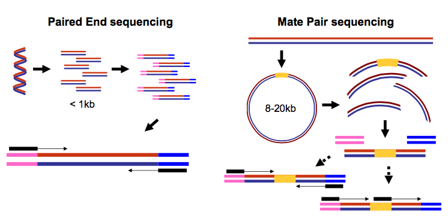
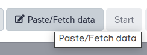
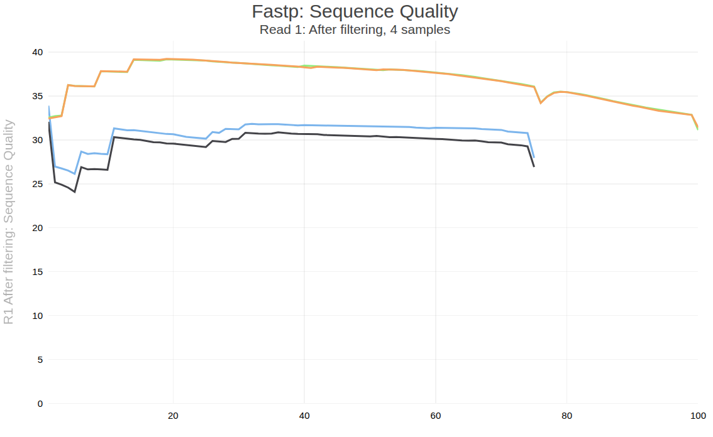
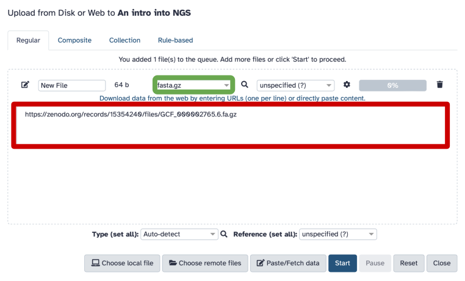
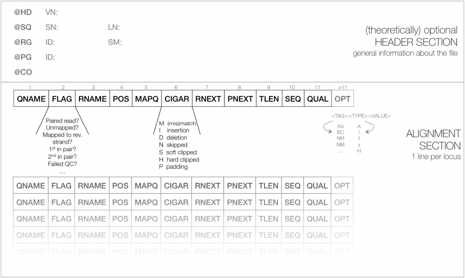
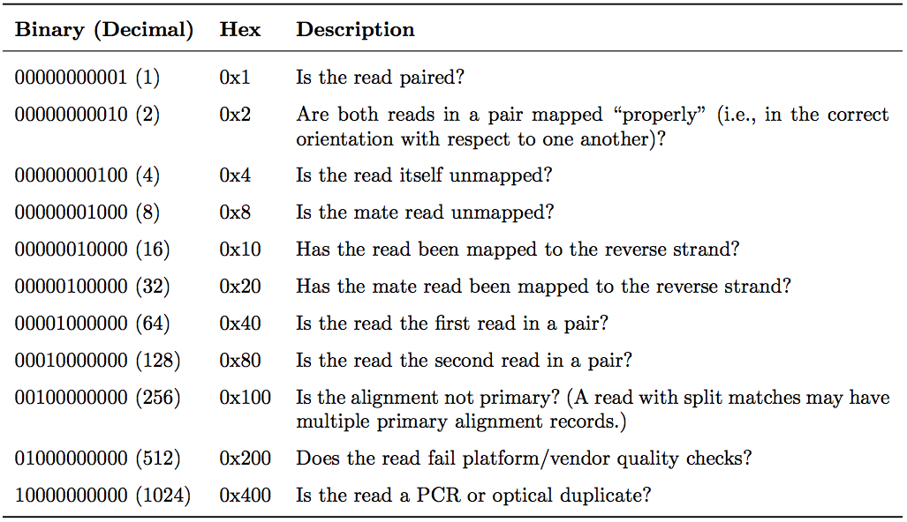
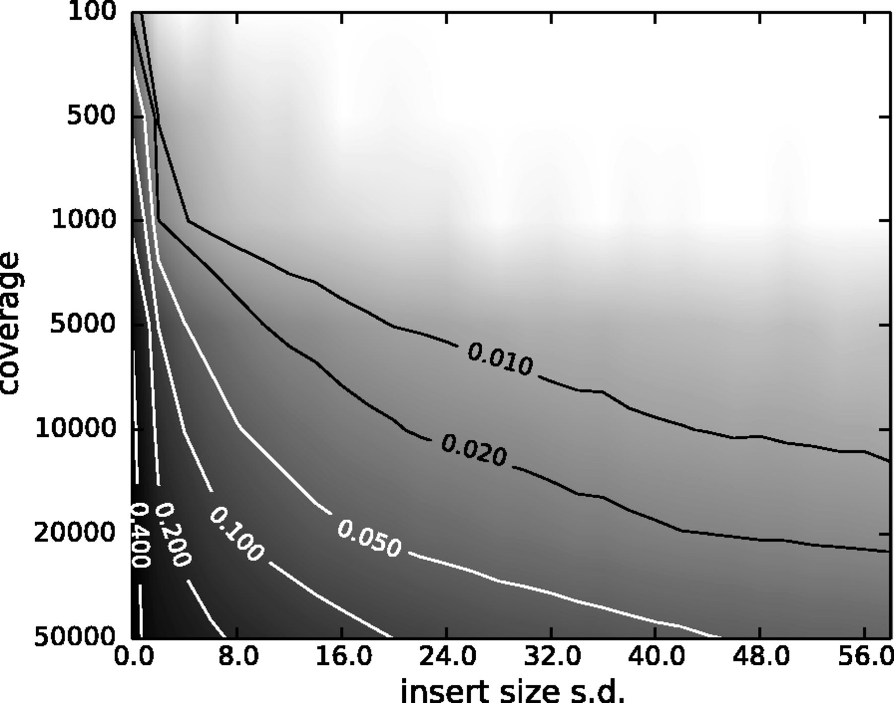

NGS data logistics
| Author(s) |
|
| Editor(s) |
|
| Reviewers |
|
OverviewQuestions:
Objectives:
How to manipulate and process NGS data
Understand most common types of NGS-related datatypes
Learn about how Galaxy handles NGS data using Illumina data derived from patients infected with Plasmodium
Time estimation: 1 hour 30 minutesLevel: Introductory IntroductorySupporting Materials:
- Datasets
- Workflows
- galaxy-history-answer Answer Histories
- FAQs
- video Recordings
- instances Available on these Galaxies
Published: Feb 22, 2017Last modification: Jul 24, 2025License: Tutorial Content is licensed under Creative Commons Attribution 4.0 International License. The GTN Framework is licensed under MITpurl PURL: https://gxy.io/GTN:T00188rating Rating: 4.7 (7 recent ratings, 74 all time)version Revision: 38
In this tutorial, we will look at practical aspects of manipulation of next-generation sequencing data. We will start with the FASTQ format produced by most sequencing machines and will finish with a table of variants present in four human samples we will analyze.
The Story
To make this tutorial as realistic as possible we wanted to use an example from the real world. We will start with four sequencing datasets (fastq files) representing four individuals positive for malaria—a life-threatening disease caused by Plasmodium parasites—transmitted to humans through the bites of infected female Anopheles mosquitoes.
Our goal is to understand whether the malaria parasite (Plasmodium falciparum) infecting these individuals is resistant to Pyrimethamine—an antimalarial drug. Resistance to Pyrimethamine is conferred by a mutation in PF3D7_0417200 (dhfr) gene (Cowman et al. 1988). Given sequencing data from four individuals we will determine which one of them in infected with a Plasmodium falciparum carrying mutations in this gene.
An outline of our analysis looks like this:
.
From reads to variants
In this tutorial we will use data from four infected individuals sequenced within the MalariaGen effort. We use the following four samples:
| Accession | Location |
|---|---|
| ERR636434 | Ivory coast |
| ERR636028 | Ivory coast |
| ERR042232 | Colombia |
| ERR042228 | Colombia |
These accessions correspond to datasets stored in the Sequence Read Archive at NCBI.
Let’s do that 🚀
Upload data into Galaxy
For this tutorial we down-sampled the data (made datasets smaller) to make sure that you can go through it quickly. We deposited these fastq datasets in a Zenodo library. Let’s upload these datasets into Galaxy!
FASTQ is not a very well defined format. In the beginning various manufacturers of sequencing instruments were free to interpret FASTQ as they saw fit, resulting in a multitude of FASTQ flavors. This variation stemmed primarily from different ways of encoding quality values as described on the Wikipedia article for FASTQ (below you will find an explanation of quality scores and their meaning). Today, the FASTQ Sanger version (Cock et al. 2009) of the format is considered to be the standard form of FASTQ. Galaxy is using FASTQ Sanger as the only legitimate input for downstream processing tools and provides a number of utilities for converting FASTQ files (Blankenberg et al. 2010) into this form (see FASTQ Quality Control section of Galaxy tools which is available on some usegalaxy.* instances).
The FASTQ format looks like this:
@M02286:19:000000000-AA549:1:1101:12677:1273 1:N:0:23 CCTACGGGTGGCAGCAGTGAGGAATATTGGTCAATGGACGGAAGTCTGAACCAGCCAAGTAGCGTGCAG + ABC8C,:@F:CE8,B-,C,-6-9-C,CE9-CC--C-<-C++,,+;CE<,,CD,CEFC,@E9<FCFCF?9 @M02286:19:000000000-AA549:1:1101:15048:1299 1:N:0:23 CCTACGGGTGGCTGCAGTGAGGAATATTGGACAATGGTCGGAAGACTGATCCAGCCATGCCGCGTGCAG + ABC@CC77CFCEG;F9<F89<9--C,CE,--C-6C-,CE:++7:,CF<,CEF,CFGGD8FFCFCFEGCF @M02286:19:000000000-AA549:1:1101:11116:1322 1:N:0:23 CCTACGGGAGGCAGCAGTAGGGAATCTTCGGCAATGGACGGAAGTCTGACCGAGCAACGCCGCGTGAGT + AAC<CCF+@@>CC,C9,F9C9@9-CFFFE@7@:+CC8-C@:7,@EFE,6CF:+8F7EFEEF@EGGGEEEEach sequencing read is represented by four lines:
@followed by read ID and optional information about sequencing run- sequenced bases
+(optionally followed by the read ID and some additional info)- Quality scores for each base of the sequence encoded as ASCII symbols
Paired end data
It is common to prepare pair-end and mate-pair sequencing libraries. This is highly beneficial for a number of applications discussed in subsequent topics. For now, let’s just briefly discuss what these are and how they manifest themselves in FASTQ form.

In paired end sequencing (left) the actual ends of rather short DNA molecules (less than 1kb) are determined, while for mate pair sequencing (right) the ends of long molecules are joined and prepared in special sequencing libraries. In these mate pair protocols, the ends of long, size-selected molecules are connected with an internal adapter sequence (i.e. linker, yellow) in a circularization reaction. The circular molecule is then processed using restriction enzymes or fragmentation. Fragments are enriched for the linker and outer library adapters are added around the two combined molecule ends. The internal adapter can then be used as a second priming site for an additional sequencing reaction in the same orientation or sequencing can be performed from the second adapter, from the reverse strand (From Ph.D. dissertation by Martin KircherThus in both cases (paired-end and mate-pair) a single physical piece of DNA (or RNA in the case of RNA-seq) is sequenced from two ends and so generates two reads. These can be represented as separate files (two FASTQ files with first and second reads) or a single file were reads for each end are interleaved. Here are examples:
Two single files
File 1
@M02286:19:000000000-AA549:1:1101:12677:1273 1:N:0:23 CCTACGGGTGGCAGCAGTGAGGAATATTGGTCAATGGACGGAAGTCT + ABC8C,:@F:CE8,B-,C,-6-9-C,CE9-CC--C-<-C++,,+;CE @M02286:19:000000000-AA549:1:1101:15048:1299 1:N:0:23 CCTACGGGTGGCTGCAGTGAGGAATATTGGACAATGGTCGGAAGACT + ABC@CC77CFCEG;F9<F89<9--C,CE,--C-6C-,CE:++7:,CFFile 2
@M02286:19:000000000-AA549:1:1101:12677:1273 2:N:0:23 CACTACCCGTGTATCTAATCCTGTTTGATACCCGCACCTTCGAGCTTA + --8A,CCE+,,;,<CC,,<CE@,CFD,,C,CFF+@+@CCEF,,,B+C, @M02286:19:000000000-AA549:1:1101:15048:1299 2:N:0:23 CACTACCGGGGTATCTAATCCTGTTCGCTCCCCACGCTTTCGTCCATC + -6AC,EE@::CF7CFF<<FFGGDFFF,@FGGGG?F7FEGGGDEFF>FFComment: Read order is importantNote that read IDs are identical in two files and they are listed in the same order. In some cases read IDs in the first and second file may be appended with
/1and/2tags, respectively (however, this is not guaranteed).Interleaved file
@1/1 AGGGATGTGTTAGGGTTAGGGTTAGGGTTAGGGTTAGGGTTAGGGTTA + EGGEGGGDFGEEEAEECGDEGGFEEGEFGBEEDDECFEFDD@CDD<ED @1/2 CCTAACCCTAACCCTAACCCTAACCCTAACCCTAACCCTAACCCTAAC + GHHHDFDFGFGEGFBGEGGEGEGGGHGFGHFHFHHHHHHHEF?EFEFF @2/1 AGGGATGTGTTAGGGTTAGGGTTAGGGTTAGGGTTAGGGTTAGGGTTA + HHHHHHEGFHEEFEEHEEHHGGEGGGGEFGFGGGGHHHHFBEEEEEFG @2/2 CCTAACCCTAACCCTAACCCTAACCCTAACCCTAACCCTAACCCTAAC + HHHHHHHHHHHHGHHHHHHGHHHHHHHHHHHFHHHFHHHHHHHHHHHIn this tutorial paired-end data represented as two different files.
Hands On: Upload accessions into Galaxy
- Go to your Galaxy instance of choice such as one of the UseGalaxy.* instances or any other.
- Click Upload Data button:
- In the dialog box that would appear click “Paste/Fetch” button

- Paste the following accessions into the box (red box in the image below):
https://zenodo.org/records/15354240/files/ERR042228_F.fq.gz https://zenodo.org/records/15354240/files/ERR042228_R.fq.gz https://zenodo.org/records/15354240/files/ERR042232_F.fq.gz https://zenodo.org/records/15354240/files/ERR042232_R.fq.gz https://zenodo.org/records/15354240/files/ERR636028_F.fq.gz https://zenodo.org/records/15354240/files/ERR636028_R.fq.gz https://zenodo.org/records/15354240/files/ERR636434_F.fq.gz https://zenodo.org/records/15354240/files/ERR636434_R.fq.gz- Change datatype to
fastqsanger.gz(green box in the image below)- Click Start button
- Close dialog by pressing Close button This will create eight datasets in your history on the right side of the interface:
There are eight datasets because each sample has forward and reverse read files associated with it, so 4 × 2 = 8

Bundle data into Collection
We are going to perform exactly the same analysis on all four samples. So it does not make sense to repeat the same operation eight times (imagine if you had a hundred or a thousand datasets). So before we go any further we will bundle the datasets we have in the history into a Collection. Collections in Galaxy are logical groupings of datasets that reflect the semantic relationships between them in the experiment / analysis. In this case, we will create a paired collection that will have two “levels” (For more information on Collections see the Collections tutorial:
Hands On: Creating a paired-collectionTo create a paired collection follow the steps shown in the video below (the video is 52 seconds long 😁):
Explore the collections by first clicking on the collection name in the history panel. This takes you inside the collection and shows you the datasets in it. You can then navigate back to the outer level and, finally, full history.
Assessing the quality of the data with fastp and multiqc
Raw fastq data is often contaminated with fragments of sequencing adapters used in library preparation and contain low quality reads or reads with low quality portions. fastp can automatically detect widely used sequencing adapters and remove them as well as prune low quality segments from reads. So, let’s pass our data through fastp:
Hands On: Running fastpRun fastp ( Galaxy version 0.24.0+galaxy4) with the following parameters:
- “Single-end or paired reads”:
Paired collection(red outline).- “Select paired collection(s)”: Collection we created in the previous step (red arrow).
Fastp modifies files by removing standard Illumina adapters and applies a number of quality filters generating “Cleaned up data” shown above) as well as HTML and JSON reports as three collections:

You can click on individual HTML reports to get an idea about the quality of the data and degree of “cleanup”. However, clicking on each dataset individually can become problematic if the number of datasets is large (you don’t want to click on hundred datasets, do you?). We can visualize the QC data provided by fastp for ALL samples by feeding its JSON output to multiqc :
Hands On: Running multiqc on fastp JSON dataRun multiqc ( Galaxy version 1.27+galaxy3) with the following parameters:
- “Which tool was used to generate logs?”:
fastp(red outline).- “Output of fastp”: JSON output generated by fastp at the previous step (red arrow).
multiqcwill produce two outputs, but the one you care about has a work “Webpage” in it:Click on the galaxy-eye (eye) icon and you will the QC report.

Figure below shows one of the plots produced by multiqc—distribution of quality values across positions for forward reads after processing.

Open image in new tabWhat are base qualities?
As we’ve seen above, FASTQ datasets contain two types of information:
- sequence of the read
- base qualities for each nucleotide in the read.
The base qualities allow us to judge how trustworthy each base in a sequencing read is. The following excerpt from an excellent tutorial by Friederike Dündar, Luce Skrabanek, Paul Zumbo explains what base qualities are:
Comment: From "Introduction to differential gene expression analysis using RNA-seq"Illumina sequencing is based on identifying the individual nucleotides by the fluorescence signal emitted upon their incorporation into the growing sequencing read. Once the fluorescence intensities are extracted and translated into the four letter code. The deduction of nucleotide sequences from the images acquired during sequencing is commonly referred to as base calling.
Due to the imperfect nature of the sequencing process and limitations of the optical instruments, base calling will always have inherent uncertainty. This is the reason why FASTQ files store the DNA sequence of each read together with a position-specific quality score that represents the error probability, i.e., how likely it is that an individual base call may be incorrect. The score is called Phred score, \(Q\), which is proportional to the probability \(p\) that a base call is incorrect, where \(Q = −10lg(p)\). For example, a Phred score of 10 corresponds to one error in every ten base calls (\(Q = −10lg(0.1)\)), or 90% accuracy; a Phred score of 20 corresponds to one error in every 100 base calls, or 99% accuracy. A higher Phred score thus reflects higher confidence in the reported base.
To assign each base a unique score identifier (instead of numbers of varying character length), Phred scores are typically represented as ASCII characters. At http://ascii-code.com/ you can see which characters are assigned to what number.
For raw reads, the range of scores will depend on the sequencing technology and the base caller used (Illumina, for example, used a tool called Bustard, or, more recently, RTA). Unfortunately, Illumina has been anything but consistent in how they calculated and ASCII-encoded the Phred score (see below)! In addition, Illumina now allows Phred scores for base calls with as high as 45, while 41 used to be the maximum score until the HiSeq X. This may cause issues with downstream sapplications that expect an upper limit of 41.Base call quality scores are represented with the Phred range. Different Illumina (formerly Solexa) versions used different scores and ASCII offsets. Starting with Illumina format 1.8, the score now represents the standard Sanger/Phred format that is also used by other sequencing platforms and the sequencing archives.
The ASCII interpretation and ranges of the different Phred score notations used by Illumina and the original Sanger interpretation. Although the Sanger format allows a theoretical score of 93, raw sequencing reads typically do not exceed a Phred score of 60. In fact, most Illumina-based sequencing will result in maximum scores of 41 to 45 (image from Wikipedia)
What is good and what is bad?
One of the first steps in the analysis of NGS data is seeing how good the data actually is. FastqQC is the most famous tool allowing you to assess the quality of FASTQ datasets (and deciding whether to blame or not to blame whoever has done sequencing for you). Falco is an alternative tool for quality control. Falco is a improved implementation of FastQC for high throughput sequence quality control.
Here, you can see FastQC base quality reports (the tools gives you many other types of data) for two datasets: A and B. The A dataset has long reads (250 bp) and very good quality profile with no qualities dropping below phred score of 30. The B dataset is significantly worse with ends of the reads dipping below phred score of 20. The B reads may need to be trimmed for further processing. Falco will generate almost the same reports about the quality of the reads.”)

Mapping reads
We can proceed with mapping reads. Galaxy has a number of mappers including bowtie, bwa-mem, and bwa-mem2. For this analysis we will use bwa-mem2 —the latest version of this popular and “battle-tested” tool.
Upload reference genome
The key question when mapping reads against a genome is whether the index for this genome—a datastructure bwa-mem2 uses to quickly find matches—is already installed on Galaxy or not. Let’s assume that it is NOT present in Galaxy. In this case you will need to upload the genome. In this case we will use reference genome of 3D7 strain P. faciparum.
Hands On: Uploading the genome for P. falciparumTo download the genome paste the following URL into the Upload tool:
https://zenodo.org/records/15354240/files/GCF_000002765.6.fa.gzThe only difference is that here with example we’ve see above is that you need to set datatype (green box) to
fasta.gz:
Map the reads
Now we can map the reads against the uploaded genome:
Hands On: Map sequencing reads with bwa-memRun BWA-MEM2 ( Galaxy version 2.2.1+galaxy4) with the parameters shown in the image below:
- “Will you select a reference genome from your history or use a built-in index?”:
Use a reference genome from history and build index if necessary(red outline).- “Use the following dataset as the reference”: Choose the reference we uploaded at the previous step (red arrow).
- “Single or Paired-end reads”:
Paired collection(green outline).- “Select a paired collection”: Select the collection of fastq datasets produced by fastp (green arrow).

bwa-mem2 produces four BAM outputs which we will process further and will use to call variants.
SAM/BAM data
The SAM/BAM format is an accepted standard for storing aligned reads (it can also store unaligned reads and some mappers such as Map with BWA ( Galaxy version 0.7.19) are accepting unaligned BAM as input). The binary form of the format (BAM) is compact and can be rapidly searched (if indexed). In Galaxy, BAM datasets are always indexed (accompanies by a .bai file) and sorted in coordinate order. In the following discussion, we once again rely on tutorial by Friederike Dündar, Luce Skrabanek, and Paul Zumbo.
The Sequence Alignment/Map (SAM) format is, in fact, a generic nucleotide alignment format that describes the alignment of sequencing reads (or query sequences) to a reference. The human readable, TAB delimited SAM files can be compressed into the Binary Alignment/Map format. These BAM files are bigger than simply gzipped SAM files, because they have been optimized for fast random access rather than size reduction. Position-sorted BAM files can be indexed so that all reads aligning to a locus can be efficiently retrieved without loading the entire file into memory.
As shown below, SAM files typically contain a short header section and a very long alignment section where each row represents a single read alignment. The following sections will explain the SAM format in a bit more detail. For the most comprehensive and updated information go to SAM/BAM and related specifications GitHub repository.

Each line of the optional header section starts with @, followed by the appropriate abbreviation (e.g., SQ for sequence dictionary which lists all chromosomes names (SN) and their lengths (LN)). The vast majority of lines within a SAM file typically correspond to read alignments where each read is described by the 11 mandatory entries (black font) and a variable number of optional fields (grey font). From a tutorial by Friederike Dündar, Luce Skrabanek, and Paul Zumbo.”SAM Header
The header section includes information about how the alignment was generated and stored. All lines in the header section are tab-delimited and begin with the “@” character, followed by tag:value pairs, where tag is a two-letter string that defines the content and the format of value. For example, the “@SQ” line in the header section contains the information about the names and lengths of the reference sequences to which the reads were aligned. For a hypothetical organism with three chromosomes of length 1,000 bp, the SAM header should contain the following three lines:
@SQ SN:chr1 LN:1000 @SQ SN:chr2 LN:1000 @SQ SN:chr3 LN:1000SAM alignment section
The optional header section is followed by the alignment section where each line corresponds to one sequenced read. For each read, there are 11 mandatory fields that always appear in the same order:
<QNAME> <FLAG> <RNAME> <POS> <MAPQ> <CIGAR> <MRNM> <MPOS> <ISIZE> <SEQ> <QUAL>If the corresponding information is unavailable or irrelevant, field values can be ‘0’ or ‘*’ (depending on the field, see below), but they cannot be missing! After the 11 mandatory fields, a variable number of optional fields can be present. Here is an example of one single line of a real-life SAM file (you may need to scroll sideways):
ERR458493 .552967 16 chrI 140 255 12 M61232N37M2S * 0 0 CCACTCGTTCACCAGGGCCGGCGGGCTGATCACTTTATCGTGCATCTTGGC BB?HHJJIGHHJIGIIJJIJGIJIJJIIIGHBJJJJJJHHHHFFDDDA1+B NH:i:1 HI:i:1 AS:i:41 nM:i:2The following table explains the format and content of each field. The
FLAG,CIGAR, and the optional fields (marked with pale blue background) are explained in more detail below. The number of optional fields can vary widely between different SAM files and even between reads within in the same file. The field types marked in blue are explained in more detail in the text below.
FLAGfieldThe FLAG field encodes various pieces of information about the individual read, which is particularly important for Paired-Enmd (PE) reads. It contains an integer that is generated from a sequence of bits (0, 1). This way, answers to multiple binary (Yes/No) questions can be compactly stored as a series of bits, where each of the single bits can be addressed and assigned separately.
The following table gives an overview of the different properties that can be encoded in the FLAG field. The developers of the SAM format and samtools tend to use the hexadecimal encoding as a means to refer to the different bits in their documentation. The value of the FLAG field in a given SAM file, however, will always be the decimal representation of the sum of the underlying binary values (as shown in Table below, row 2).

The FLAG field of SAM files stores information about the respective read alignment in one single decimal number. The decimal number is the sum of all the answers to the Yes/No questions associated with each binary bit. The hexadecimal representation is used to refer to the individual bits (questions). A bit is set if the corresponding state is true. For example, if a read is paired, 0x1 will be set, returning the decimal value of 1. Therefore, all FLAG values associated with paired reads must be uneven decimal numbers. Conversely, if the 0x1 bit is unset (= read is not paired), no assumptions can be made about 0x2, 0x8, 0x20, 0x40 and 0x80 because they refer to paired reads. From a tutorial by Friederike Dündar, Luce Skrabanek, and Paul Zumbo.”In a run with single reads, the flags you most commonly see are:
- 0: This read has been mapped to the forward strand. (None of the bit-wise flags have been set.)
- 4: The read is unmapped (
0x4is set).- 16: The read is mapped to the reverse strand (
0x10is set)(
0x100,0x200and0x400are not used by most aligners/mappers, but could, in principle be set for single reads.) Some commonFLAGvalues that you may see in a PE experiment include:
69 (= 1 + 4 + 64) The read is paired, is the first read in the pair, and is unmapped. 77 (= 1 + 4 + 8 + 64) The read is paired, is the first read in the pair, both are unmapped. 83 (= 1 + 2 + 16 + 64) The read is paired, mapped in a proper pair, is the first read in the pair, and it is mapped to the reverse strand. 99 (= 1 + 2 + 32 + 64) The read is paired, mapped in a proper pair, is the first read in the pair, and its mate is mapped to the reverse strand. 133 (= 1 + 4 + 128) The read is paired, is the second read in the pair, and it is unmapped. 137 (= 1 + 8 + 128) The read is paired, is the second read in the pair, and it is mapped while its mate is not. 141 (= 1 + 4 + 8 + 128) The read is paired, is the second read in the pair, but both are unmapped. 147 (= 1 + 2 + 16 + 128) The read is paired, mapped in a proper pair, is the second read in the pair, and mapped to the reverse strand. 163 (= 1 + 2 + 32 + 128) The read is paired, mapped in a proper pair, is the second read in the pair, and its mate is mapped to the reverse strand.
CIGARstring
CIGARstands for Concise Idiosyncratic Gapped Alignment Report. This sixth field of a SAM file contains a so-called CIGAR string indicating which operations were necessary to map the read to the reference sequence at that particular locus.The following operations are defined in CIGAR format (also see figure below):
- M - Alignment (can be a sequence match or mismatch!)
- I - Insertion in the read compared to the reference
- D - Deletion in the read compared to the reference
- N - Skipped region from the reference. For mRNA-to-genome alignments, an N operation represents an intron. For other types of alignments, the interpretation of N is not defined.
- S - Soft clipping (clipped sequences are present in read); S may only have H operations between them and the ends of the string
- H - Hard clipping (clipped sequences are NOT present in the alignment record); can only be present as the first and/or last operation
- P - Padding (silent deletion from padded reference)
- = - Sequence match (not widely used)
- X - Sequence mismatch (not widely used)
The sum of lengths of the M, I, S, =, X operations must equal the length of the read. Here are some examples:
From a tutorial by Friederike Dündar, Luce Skrabanek, and Paul Zumbo.”)
Optional fields
Following the eleven mandatory SAM file fields, the optional fields are presented as key-value pairs in the format of
<TAG>:<TYPE>:<VALUE>, whereTYPEis one of:
A- Characteri- Integerf- Float numberZ- StringH- Hex stringThe information stored in these optional fields will vary widely depending on the mapper and new tags can be added freely. In addition, reads within the same SAM file may have different numbers of optional fields, depending on the program that generated the SAM file. Commonly used optional tags include:
AS:i- Alignment scoreBC:Z- Barcode sequenceHI:i- Match is i-th hit to the readNH:i- Number of reported alignments for the query sequenceNM:i- Edit distance of the query to the referenceMD:Z- String that contains the exact positions of mismatches (should complement the CIGAR string)RG:Z- Read group (should match the entry after ID if @RG is present in the header.Thus, for example, we can use the NM:i:0 tag to select only those reads which map perfectly to the reference (i.e., have no mismatches). While the optional fields listed above are fairly standardized, tags that begin with
X,Y, andZare reserved for particularly free usage and will never be part of the official SAM file format specifications.XS, for example, is used by TopHat (an RNA-seq analysis tool we will discuss later) to encode the strand information (e.g.,XS:A:+) while Bowtie2 and BWA useXS:i:for reads with multiple alignments to store the alignment score for the next-best-scoring alignment (e.g.,XS:i:30).Read Groups
One of the key features of SAM/BAM format is the ability to label individual reads with readgroup tags. This allows pooling results of multiple experiments into a single BAM dataset. This significantly simplifies downstream logistics: instead of dealing with multiple datasets one can handle just one. Many downstream analysis tools such as variant callers are designed to recognize readgroup data and output results on per-readgroup basis.
One of the best descriptions of BAM readgroups is on GATK support site:
GATK forum also provides the following example:
Manipulating SAM/BAM datasets
We support four major toolsets for processing of SAM/BAM datasets:
- DeepTools - a suite of user-friendly tools for the visualization, quality control and normalization of data from deep-sequencing DNA sequencing experiments.
- SAMtools - various utilities for manipulating alignments in the SAM/BAM format, including sorting, merging, indexing and generating alignments in a per-position format.
- BEDtools - a toolkit originally written for BED format was expanded for analysis of BAM and VCF datasets.
- Picard - a set of Java tools for manipulating high-throughput sequencing data (HTS) data and formats.

Remove duplicates
In many cases there could be artifacts that can be detected in mapped reads. One of such artifacts are duplicate reads.
PCR duplicates
Preparation of sequencing libraries (at least at the time of writing) for technologies such as Illumina (used in this example) involves PCR amplification. It is required to generate sufficient number of sequencing templates so that a reliable detection can be performed by base callers. Yet, PCR has its biases, which are especially profound in cases of multitemplate PCR used for construction of sequencing libraries (Kanagawa 2003).
Analyzing molecules aligning with the same outer coordinates, a mapping quality of at least 30 and a length of at least 30 nucleotide, resulted in an average coverage of 12.9 per PCR duplicate and an empirical coverage distribution similar to an exponential/power law distribution (left upper panel). This indicates that many molecules are only observed for deeper sequencing while other molecules are available at higher frequencies. Analyzing length (left middle panel) and GC content (left lower panel) patterns as well as the combination (right panel) shows higher PCR duplicate counts for a GC content between 30% to 70% as well as for shorter molecules compared to longer molecules. This effect may be due to an amplification bias from the polymerase or the cluster generation process necessary for Illumina sequencing. (From Ph.D. dissertation by <a href="https://ul.qucosa.de/api/qucosa%3A11231/attachment/ATT-0/">Martin Kircher</a>).”
Duplicates can be identified based on their outer alignment coordinates or using sequence-based clustering. One of the common ways for identification of duplicate reads is the
MarkDuplicatesutility from Picard package, which we will use later in this tutorial.Sampling coincidence duplicates
However, one has to be careful when removing duplicates in cases when the sequencing targets are small (e.g., sequencing of bacterial, viral, or organellar genomes as well as amplicons). This is because when sequencing target is small reads will have the same coordinates by chance and not because of PCR amplification issues. The figure below illustrates the fine balance between estimates allele frequency, coverage, and variation in insert size (from (Zhou et al. 2014)):

The Variant Allele Frequency (VAF) bias determined by coverage and insert size variance. Reads are paired-end and read length is 76. The insert size distribution is modeled as a Gaussian distribution with mean at 200 and standard deviation shown on the X-axis. The true VAF is 0.05. The darkness at each position indicates the magnitude of the bias in the VAF (Zhou et al. 2014).”)
Removing duplicates is particularly important for identification of sequence variants as they can affect their frequencies. It is performed with the MarkDuplicates tool:
Hands On: Remove duplicatesRun MarkDuplicates ( Galaxy version 3.1.1.0) with the following parameters:
- param-file “Select SAM/BAM dataset or dataset collection”:
bam_output(output of Map with BWA-MEM ( Galaxy version 0.7.19)) as shown with the red arrow.- “If true do not write duplicates to the output file instead of writing them with appropriate flags set”:
Yesas shown with green arrow.

Calling variants
Now we are ready to proceed with variant calling. For this purpose we will a tool called lofreq. One thing to keep in mind in our case is that the samples are from human blood. In humans Plasmodium parasites exist in haploid state (only zygote is diploid and this stage happens in mosquito). lofreq is specifically designed for calling variants in this scenario.
Realign reads
One of the key issues with accurate identification of sequence variants is normalizing indels (insertions and deletions).
Left aligning of indels (a variant of re-aligning) is extremely important for obtaining accurate variant calls. For illustrating how left-aligning works, we expanded on an example provided by Tan et al. 2015. Suppose you have a reference sequence and a sequencing read:
Reference GGGCACACACAGGG Read GGGCACACAGGGIf you look carefully you will see that the read is simply missing a
CArepeat. But it is not apparent to a mapper, so some of possible alignments and corresponding variant calls include:Alignment Variant Call GGGCACACACAGGG Ref: CAC GGGCAC--ACAGGG Alt: C GGGCACACACAGGG Ref: ACA GGGCA--CACAGGG Alt: A GGGCACACACAGGG Ref: GCA GGG--CACACAGGG Alt: GWhile we cannot know which of these arrangements is correct, left-aligning guarantees consistency.
Realign reads is a part of lofreq package. It corrects misalignment around insertions and deletions:
Hands On: Realign reads around indelsRun Realign reads ( Galaxy version 2.1.5+galaxy0) with the following parameters:
- param-file “Reads to realign”: output of MarkDuplicates as shown with the red arrow.
- “Choose the source for the reference genome”:
History
- param-file “Reference”: set this to the previously uploaded reference genome (green outline and arrow).
Call Variants using lofreq Call variants
We are now ready to actually call variants:
Hands On: Call variantsRun Call variants ( Galaxy version 2.1.5+galaxy3) with the following parameters:
- param-file “Input reads in BAM format”: Output of Insert indel qualities (red arrow)
- “Choose the source for the reference genome”:
History(green outline).
- param-file “Reference”: set this to the previously uploaded reference genome (green outline and arrow).
- “Types of variants to call”:
SNVs and indels(blue outline and arrow).- “Variant calling parameters”:
Configure settings(orange outline).
- In “Coverage”:
- “Minimal coverage”:
10(orange arrow).- In “Base-calling quality”:
- “Minimum baseQ”:
20(orange arrow).- “Minimum baseQ for alternate bases”:
20(orange arrow).- In “Mapping “quality”:
- “Minimum mapping quality”:
20(orange arrow).

The output of this step is a collection of VCF files containing information on all variants found between the reads and the reference genome.
Annotating variants
Preparing SnpEff database
We will now annotate the variants we called in the previous step with the effect they may have on the Plasmodium phenotype. In order to do this we need to create a database that can be used by SnpEff . This process requires a reference genome (which we already uploaded and a list of genes present in this genome—a file we have not uploaded yet.
Hands On: Uploading gene annotations for P. falciparumTo download gene annotations paste the following URL into the Upload tool as was shown previously in this tutorial already twice (for fastq files and for reference genome).
https://zenodo.org/records/15354240/files/GCF_000002765.6_GCA_000002765.ncbiRefSeq.gtf.gzSet datatype (green box) to
gtf.gz:
Now we can run SnpEff build :
Hands On: Prepare snpEff database with SnpEff BuildRun SnpEff Build ( Galaxy version 5.2+galaxy0) with the following parameters:
- “Name for the database”:
Pf(red arrow).- “Input annotations are in”:
GTF(green arrow).- “GTF dataset to build database from”: Select the GTF file uploaded at the previous step (blue arrow).
- “Choose the source for the reference genome”:
History(orange outline).- “Genome in FASTA format”: Choose reference genome uploaded earlier (orange arrow).

Annotate variant effects with SnpEff eff
We are now ready to annotate variants with SnpEff eff (here “eff” stands for effect):
Hands On: Annotate variant effectsRun SnpEff eff ( Galaxy version 5.2+galaxy0) with the following parameters:
- param-file “Sequence changes (SNPs, MNPs, InDels)”: Output of lofreq we’ve run previously red arrow)
- “Genome source”:
Custom snpEff database in your historygreen outline)
- “SnpEff5.2 Genome Data”: set to the SnpEff database we built in the previous step green arrow)

Create table of variants using SnpSift Extract Fields
Previous step generated a set of annotated VCF files. These can be visualized in a genome browser, but we will go a different way. We will convert them into tab-delimited files that can be easily processed.
Hands On: Create table of variantsRun SnpSift Extract Fields ( Galaxy version 4.3+t.galaxy0) with the following parameters:
- param-file “Variant input file in VCF format”: Output of SnpEff eff from previous step (red arrow)
- “Fields to extract”: Copy the following string into a box highlighted with (green outline):
CHROM POS REF ALT QUAL DP AF SB DP4 ANN[*].EFFECT ANN[*].IMPACT ANN[*].GENE ANN[*].AA_POS ANN[*].HGVS_C ANN[*].HGVS_P
- “One effect per line”:
Yes(blue arrow)
Let’s explain which fields we are extracting:
| # | Field | Meaning |
|---|---|---|
| 1 | CHROM |
Name of the chromosome |
| 2 | POS |
Position within that chromosome |
| 3 | REF |
Reference allele (the one present in the reference |
| 4 | ALT |
Alternative allele (the one observed in the reads) |
| 5 | QUAL |
Variant quality computed by lowfreq |
| 6 | DP |
Read depth (the number of reads covering this position) |
| 7 | AF |
Alternative allele frequency |
| 8 | SB |
Strand bias P-value from Fisher’s exact test calculated by lofreq |
| 9 | DP4 |
Depth for Forward Ref Counts, Reverse Ref Counts, Forward Alt Counts, Reverse Alt Counts |
| 10 | ANN[*].EFFECT |
Expected effect of the variant on the protein |
| 11 | ANN[*].IMPACT |
Expected impact of the phenotype |
| 12 | ANN[*].GENE |
Name of the gene containing the variant |
| 13 | ANN[*].AA_POS |
Amino acid position within the gene affected by this variant |
| 14 | ANN[*].HGVS_C |
Nucleotide change in nucleotide coordinates relative to the start of the coding region |
| 15 | ANN[*].HGVS_P |
Amino acid change in amino acid coordinates relative to the start of the protein |
Collapse data into a single dataset
We now extracted meaningful fields from VCF datasets. But they still exist as a collection. To move towards secondary analysis we need to collapse this collection into a single dataset. “Collapsing” simply concatenates the content of collection elements and attaches sample IDs, so that we know which line in the concatenated file corresponds to which sample:
For more information about collapsing collections, please watch the following YouTube video:
Hands On: Collapse a collectionRun Collapse Collection ( Galaxy version 5.1.0) with the following parameters:
- param-collection “Collection of files to collapse into single dataset”: Output of SnpSift Extract Fields from the previous step (red arrow).
- “Keep one header line”:
Yes(green arrow)- “Prepend File name”:
Yes(blue arrow)- “Where to add dataset name”:
Same line and each line in dataset(orange outline)
You can see that this tool takes lines from all collection elements (in this tutorial we have two), add element name as the first column, and pastes everything together. So, if we have a collection as an input:
Code In: A collection with two items (15 columns)A collection element named
ERR042228.fqNC_004318.2 676399 C T 1344.0 45 0.977778 0 0,0,23,22 missense_variant MODERATE PF3D7_0415200 914 c.2740G>A p.Glu914Lys NC_004318.2 676631 C T 2000.0 60 0.966667 0 0,0,32,27 synonymous_variant LOW PF3D7_0415200 836 c.2508G>A p.Lys836LysA collection element named
ERR042232.fq:NC_004318.2 671152 G A 1324.0 42 0.952381 0 0,1,20,21 synonymous_variant LOW PF3D7_0415100 90 c.270G>A p.Gln90Gln NC_004318.2 671641 A T 1300.0 43 0.906977 0 0,0,16,27 missense_variant MODERATE PF3D7_0415100 253 c.759A>T p.Glu253Asp
We will have a single dataset as the output:
Code Out: A single dataset (16 columns)then the Collapse Collection ( Galaxy version 5.1.0) will produce this:
ERR042228.fq NC_004318.2 676399 C T 1344.0 45 0.977778 0 0,0,23,22 missense_variant MODERATE PF3D7_0415200 914 c.2740G>A p.Glu914Lys ERR042228.fq NC_004318.2 676631 C T 2000.0 60 0.966667 0 0,0,32,27 synonymous_variant LOW PF3D7_0415200 836 c.2508G>A p.Lys836Lys ERR042232.fq NC_004318.2 671152 G A 1324.0 42 0.952381 0 0,1,20,21 synonymous_variant LOW PF3D7_0415100 90 c.270G>A p.Gln90Gln ERR042232.fq NC_004318.2 671641 A T 1300.0 43 0.906977 0 0,0,16,27 missense_variant MODERATE PF3D7_0415100 253 c.759A>T p.Glu253Asp
you can see that this added the first column with dataset ID taken from collection element name!
Anything interesting?
These data are now ready for downstream analysis. (Cowman et al. 1988) showed that P.faciparum strains that have an amino acid change at residue 108 of the dhfr gene have increased resistance to pyrimethamine. In P. faciparum 3D7 (we uploaded genome of this particular strain earlier in this tutorial) this gene is also called PF3D7_0417200. So let’s look for PF3D7_0417200 in our results. For this we use a tool called Filter :
Hands On: Filter SNPs with gene of interestRun Filter with the following parameters:
- “Filter”*: Output of Collapse Collection from the previous step (red arrow).
- “With following condition”: (green arrow):
c13=='PF3D7_0417200'- “Number of header lines to skip”:
1(blue outline).

{kind=link}
{kind=link}
{kind=link}
{kind=link}
{kind=link}
{kind=link}
{kind=link}
{kind=link}
{kind=link}
{kind=link}
{kind=link}
{kind=link}
{kind=link}
{kind=link}
{kind=link}
{kind=link}
The output will look like this:
| Sample | CHROM | POS | REF | ALT | QUAL | DP | AF | SB | DP4 | ANN[*].EFFECT | ANN[*].IMPACT | ANN[*].GENE | ANN[*].AA_POS | ANN[*].HGVS_C | ANN[*].HGVS_P |
|---|---|---|---|---|---|---|---|---|---|---|---|---|---|---|---|
| ERR042228.fq | NC_004318.2 | 748410 | G | A | 2335 | 70 | 0.957143 | 0 | 0,0,30,40 | missense_variant | MODERATE | PF3D7_0417200 | 108 | c.323G>A | p.Ser108Asn |
| ERR636028.fq | NC_004318.2 | 748239 | A | T | 6941 | 194 | 0.984536 | 0 | 0,0,117,77 | missense_variant | MODERATE | PF3D7_0417200 | 51 | c.152A>T | p.Asn51Ile |
| ERR636028.fq | NC_004318.2 | 748262 | T | C | 7627 | 211 | 0.981043 | 0 | 0,0,117,93 | missense_variant | MODERATE | PF3D7_0417200 | 59 | c.175T>C | p.Cys59Arg |
| ERR636028.fq | NC_004318.2 | 748410 | G | A | 8292 | 233 | 0.991416 | 0 | 0,0,112,121 | missense_variant | MODERATE | PF3D7_0417200 | 108 | c.323G>A | p.Ser108Asn |
| ERR636434.fq | NC_004318.2 | 748262 | T | C | 67 | 214 | 0.018692 | 0 | 113,97,2,2 | missense_variant | MODERATE | PF3D7_0417200 | 59 | c.175T>C | p.Cys59Arg |
Here you can see that while three samples in out dataset contain mutations in dhfr (PF3D7_0417200) gene only two—ERR042228 and ERR636028—have amino acid replacements at position 108. They are highlighted in red. If you scroll all the way to the right you will that these are Serine to Asparagine changes. This these two individuals are likely resistant to pyrimethamine treatment.
Conclusion
Now you know how to perform a fairly sophisticated variant analysis. Large scale malaria (or any other pathogen) efforts surveying hundreds of thousands of individuals are done in an exactly the same manner: sequence, map, call variants. Try it on your own data!
You've Finished the Tutorial
Key points
FASTQ Sanger version of the format is considered to be the standard form of FASTQ.
Paired end data can be provided as two files or as an interleaved one.
FastqQC is a tool allowing to check the quality of FASTQ datasets.
The most common tools for mapping are Bowtie, BWA, BWA-MEM. You can use in-built genome to map against or upload one if it is missing.
The standard format for storing aligned reads is SAM/BAM. The major toolsets to process these datasets are DeepTools, SAMtools, BAMtools and Picard.
Data can be uploaded directly from a computer, from EBI SRA and from NCBI SRA, also using FTP or URL.
One can retrieve NGS data from Sequence Read Archive
Galaxy can analyze massive amounts of data and make them suitable for secondary analysis
Frequently Asked Questions
Have questions about this tutorial? Have a look at the available FAQ pages and support channelsReferences
- Cowman, A. F., M. J. Morry, B. A. Biggs, G. A. Cross, and S. J. Foote, 1988 Amino acid changes linked to pyrimethamine resistance in the dihydrofolate reductase-thymidylate synthase gene of Plasmodium falciparum. Proc. Natl. Acad. Sci. U. S. A. 85: 10.1073/pnas.85.23.9109 https://www.pnas.org/doi/abs/10.1073/pnas.85.23.9109
- Kanagawa, T., 2003 Bias and artifacts in multitemplate polymerase chain reactions (PCR). Journal of Bioscience and Bioengineering 96: 317–323. 10.1016/s1389-1723(03)90130-7
- Cock, P. J. A., C. J. Fields, N. Goto, M. L. Heuer, and P. M. Rice, 2009 The Sanger FASTQ file format for sequences with quality scores, and the Solexa/Illumina FASTQ variants. Nucleic Acids Research 38: 1767–1771. 10.1093/nar/gkp1137
- Blankenberg, D., A. Gordon, G. Von Kuster, N. Coraor, J. Taylor et al., 2010 Manipulation of FASTQ data with Galaxy. Bioinformatics 26: 1783–1785. 10.1093/bioinformatics/btq281
- Zhou, W., T. Chen, H. Zhao, A. K. Eterovic, F. Meric-Bernstam et al., 2014 Bias from removing read duplication in ultra-deep sequencing experiments. Bioinformatics 30: 1073–1080. 10.1093/bioinformatics/btt771
Feedback
Did you use this material as an instructor? Feel free to give us feedback on how it went.
Did you use this material as a learner or student? Click the form below to leave feedback.

Citing this Tutorial
- Anton Nekrutenko, Marius van den Beek, Dave Clements, Daniel Blankenberg, NGS data logistics (Galaxy Training Materials). https://training.galaxyproject.org/training-material/topics/introduction/tutorials/galaxy-intro-ngs-data-managment/tutorial.html Online; accessed TODAY
- Hiltemann, Saskia, Rasche, Helena et al., 2023 Galaxy Training: A Powerful Framework for Teaching! PLOS Computational Biology 10.1371/journal.pcbi.1010752
- Batut et al., 2018 Community-Driven Data Analysis Training for Biology Cell Systems 10.1016/j.cels.2018.05.012
Congratulations on successfully completing this tutorial!@misc{introduction-galaxy-intro-ngs-data-managment, author = "Anton Nekrutenko and Marius van den Beek and Dave Clements and Daniel Blankenberg", title = "NGS data logistics (Galaxy Training Materials)", year = "", month = "", day = "", url = "\url{https://training.galaxyproject.org/training-material/topics/introduction/tutorials/galaxy-intro-ngs-data-managment/tutorial.html}", note = "[Online; accessed TODAY]" } @article{Hiltemann_2023, doi = {10.1371/journal.pcbi.1010752}, url = {https://doi.org/10.1371%2Fjournal.pcbi.1010752}, year = 2023, month = {jan}, publisher = {Public Library of Science ({PLoS})}, volume = {19}, number = {1}, pages = {e1010752}, author = {Saskia Hiltemann and Helena Rasche and Simon Gladman and Hans-Rudolf Hotz and Delphine Larivi{\`{e}}re and Daniel Blankenberg and Pratik D. Jagtap and Thomas Wollmann and Anthony Bretaudeau and Nadia Gou{\'{e}} and Timothy J. Griffin and Coline Royaux and Yvan Le Bras and Subina Mehta and Anna Syme and Frederik Coppens and Bert Droesbeke and Nicola Soranzo and Wendi Bacon and Fotis Psomopoulos and Crist{\'{o}}bal Gallardo-Alba and John Davis and Melanie Christine Föll and Matthias Fahrner and Maria A. Doyle and Beatriz Serrano-Solano and Anne Claire Fouilloux and Peter van Heusden and Wolfgang Maier and Dave Clements and Florian Heyl and Björn Grüning and B{\'{e}}r{\'{e}}nice Batut and}, editor = {Francis Ouellette}, title = {Galaxy Training: A powerful framework for teaching!}, journal = {PLoS Comput Biol} }
You can use Ephemeris's
shed-tools installcommand to install the tools used in this tutorial.shed-tools install [-g GALAXY] [-a API_KEY] -t <(curl https://training.galaxyproject.org/training-material/api/topics/introduction/tutorials/galaxy-intro-ngs-data-managment/tutorial.json | jq .admin_install_yaml -r)Alternatively you can copy and paste the following YAML
--- install_tool_dependencies: true install_repository_dependencies: true install_resolver_dependencies: true tools: - name: bwa owner: devteam revisions: 1dfc975b48d5 tool_panel_section_label: Mapping tool_shed_url: https://toolshed.g2.bx.psu.edu/ - name: bwa owner: devteam revisions: 1dfc975b48d5 tool_panel_section_label: Mapping tool_shed_url: https://toolshed.g2.bx.psu.edu/ - name: picard owner: devteam revisions: 3f254c5ced1d tool_panel_section_label: Picard tool_shed_url: https://toolshed.g2.bx.psu.edu/ - name: samtools_stats owner: devteam revisions: 541082d03bef tool_panel_section_label: SAM/BAM tool_shed_url: https://toolshed.g2.bx.psu.edu/ - name: bwa_mem2 owner: iuc revisions: bec6ba059ded tool_panel_section_label: Mapping tool_shed_url: https://toolshed.g2.bx.psu.edu/ - name: fastp owner: iuc revisions: 10678d49d39e tool_panel_section_label: FASTA/FASTQ tool_shed_url: https://toolshed.g2.bx.psu.edu/ - name: lofreq_call owner: iuc revisions: b11e8e9c23bf tool_panel_section_label: Variant Calling tool_shed_url: https://toolshed.g2.bx.psu.edu/ - name: lofreq_indelqual owner: iuc revisions: 971e07ca4456 tool_panel_section_label: Variant Calling tool_shed_url: https://toolshed.g2.bx.psu.edu/ - name: lofreq_viterbi owner: iuc revisions: aa35ee7f3ab2 tool_panel_section_label: Variant Calling tool_shed_url: https://toolshed.g2.bx.psu.edu/ - name: multiqc owner: iuc revisions: 31c42a2c02d3 tool_panel_section_label: Quality Control tool_shed_url: https://toolshed.g2.bx.psu.edu/ - name: samtools_view owner: iuc revisions: 32dc5f781059 tool_panel_section_label: SAM/BAM tool_shed_url: https://toolshed.g2.bx.psu.edu/ - name: snpeff owner: iuc revisions: c7275bd8b4d6 tool_panel_section_label: Variant Calling tool_shed_url: https://toolshed.g2.bx.psu.edu/ - name: snpeff owner: iuc revisions: c7275bd8b4d6 tool_panel_section_label: Variant Calling tool_shed_url: https://toolshed.g2.bx.psu.edu/ - name: snpeff_sars_cov_2 owner: iuc revisions: 2a3a00c1fa0a tool_panel_section_label: Variant Calling tool_shed_url: https://toolshed.g2.bx.psu.edu/ - name: snpsift owner: iuc revisions: 5fab4f81391d tool_panel_section_label: Variant Calling tool_shed_url: https://toolshed.g2.bx.psu.edu/ - name: sra_tools owner: iuc revisions: 8848455c0270 tool_panel_section_label: Get Data tool_shed_url: https://toolshed.g2.bx.psu.edu/ - name: collapse_collections owner: nml revisions: 90981f86000f tool_panel_section_label: Collection Operations tool_shed_url: https://toolshed.g2.bx.psu.edu/